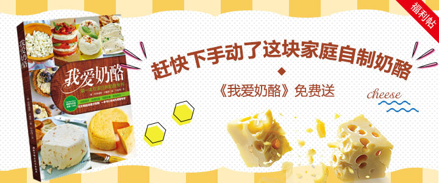
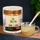

- 餐桌时光
- 玩转烘焙
- 美食课堂
- 最IN活动
- 美的社区
- 华帝社区
有人的地方才有力量

推荐话题
17362浏览
12636浏览
2017年3月30日，米其林二星大厨RaymondBlanc(雷蒙德·布兰克)，英国大使...
发帖人：美食小编最后回复：杰米12830182发布时间：2017-07-31 12:57
32472浏览
船舶驶过的影子有笛声附和，河畔人声熙攘，这是小编在2016河马生活节上于黄...
发帖人：美食小编最后回复：杰米12830182发布时间：2016-09-29 10:17
38109浏览
26144浏览
137147浏览
鸡蛋绝对是食材界的百塔大王什么，你也这么觉得果然是英雄所见略同这可蒸可...
发帖人：美食小编最后回复：杰米12830182发布时间：2016-07-29 14:38
32112浏览
九阳【焕然一新，天下无渣】暨九阳破壁系列豆浆机千万置换补贴消费者...
发帖人：美食小编最后回复：杰米12830182发布时间：2016-07-006 14:56
136181浏览
有没有和小编一样受到夏日成吨伤害的举手我看一下！不是小编我天真，而是天...
发帖人：美食小编最后回复：杰米12830182发布时间：2016-06-28 15:30
48906浏览
吃货宝贝们，最近有没有因为一轮接一轮的活动忙的晕头转向？其实小编也是忙...
发帖人：美食小编最后回复：杰米12830182发布时间：2016-06-15 11:26
56777浏览
说真的，为了让各位吃货们具有更加芬芳的气质与高超的厨房技艺，本小编也是...
发帖人：美食小编最后回复：杰米12830182发布时间：2016-05-30 12:11
发布新帖
官方活动
家乐【炆炖系列浓汤宝...
#家乐#美食菜谱征集
鸡蛋快跑之鸡蛋菜谱火...
九阳【焕然一新，天下...
人气夏日冰品TOP10菜...
积分排行榜
1 |
18LS28xgl | 286942分 | |
2 |
老方小雨 | 209424分 | |
3 |
火镀红叶 | 199704分 | |
4 |
禾小荷 | 197078分 | |
5 |
康妮chen | 195269分 | |
6 |
天蓝蓝 | 194918分 | |
7 |
林冰儿 | 194357分 | |
8 |
sourcehe | 190575分 | |
9 |
麦子老妈 | 181388分 | |
10 |
大海微澜微 | 175918分 |
发帖达人
 |
yuahanhan今日发帖：2 |
+ 关注 |
|  |
苗乡三七今日发帖：1 |
+ 关注 |
 |
猪猪今日发帖：1 |
+ 关注 |